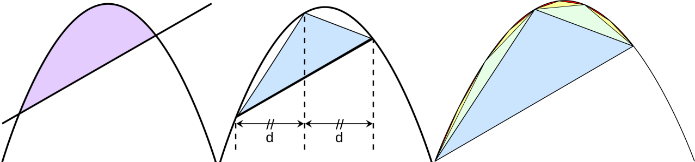
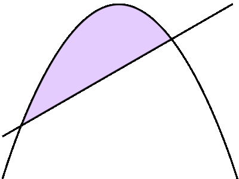

에우독소스(Eudoxus)와 아르키메데스(Archimedes)의 실진법(Method of Exhaustion)은 “어떤 양으로부터 절반 이상의 부분을 빼내고, 다시 나머지 부분으로부터 절반 이상의 부분을 빼내는 과정을 계속하면, 결국 나머지는 정해진 적은 양보다 더 적어진다.”는 원리를 활용하여 도형의 넓이나 부피에 대한 명제를 귀류법에 의해 증명하는 방법을 말한다. [1]
사실 실진법을 영어로 번역하면 “Method of Exhaustion”인데 솔직히 무슨 말인지 모르겠다. 소진법 혹은 고갈법이라고 번역하는 것이 더 직관적이지 않을까 싶다.
과거 곡선으로 둘러싸인 넓이와 부피를 계산하는 문제는 쉽지 않았지만, 에우독소스(Eudoxus)와 아르키메데스(Archimedes)의 실진법을 사용해서 이를 해결했다.
아르키메데스는 “포물선의 구적법(quadrature of parabola)”에서 오른쪽의 그림과 같이 포물선과 직선으로 둘러싸인 도형의 넓이는 그에 내접하는 삼각형의 넓이에 대해 \(\frac{4}{5}\)이 된다는 것을 증명하였다. 아르키메데스의 증명 과정을 간략히 소개하면 다음과 같다. 구적법(Quadrature)은 어떤 물체나 그래프의 면적, 부피, 함수의 정적분 등을 근사하는 방법이다.
\(\sum_{n=0}^\infty 4^{-n} = 1 + 4^{-1} + 4^{-2} + 4^{-3} + \cdots = {4\over 3}\)
library(tidyverse)
library(magick)
method_of_exhaustion <- image_read("fig/Parabolic_Segment_Dissection.png")
img_width <- image_info(method_of_exhaustion) %>%
pull(width)
img_height <- image_info(method_of_exhaustion) %>%
pull(height)
problem_img <- image_read("fig/Parabolic_segment_and_inscribed_triangle.png")
first_img <- problem_img %>%
image_crop(geometry=glue::glue("{img_width}x{img_height/2}"))
second_img <- problem_img %>%
image_crop(geometry=glue::glue("{img_width}x{img_height/2}+{0}+{10+img_height/2+70}"))
# 이미지 결합
exhaustion_img <- image_append(image_scale(c(first_img, second_img, method_of_exhaustion), "x300"))
exhaustion_img
상기 3가지 다른 그림을 결합시켜 애니메이션으로 제작한다.
frames <- image_join(
image_resize(first_img, "400x300!"),
image_resize(second_img, "400x300!"),
image_resize(method_of_exhaustion, "400x300!"))
# Turn frames into animation
animation <- image_animate(frames, fps = 1, optimize = TRUE)
animation
1. 박선용. 실진법에서 19세기 초의 극한법으로의 전환에 대한 연구. 수학교육학연구. 2019;29:1–15. http://www.dbpia.co.kr/journal/articleDetail?nodeId=NODE07621022.
데이터 과학자 이광춘 저작
kwangchun.lee.7@gmail.com